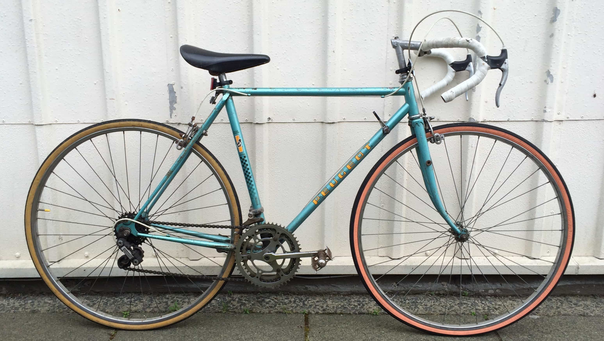
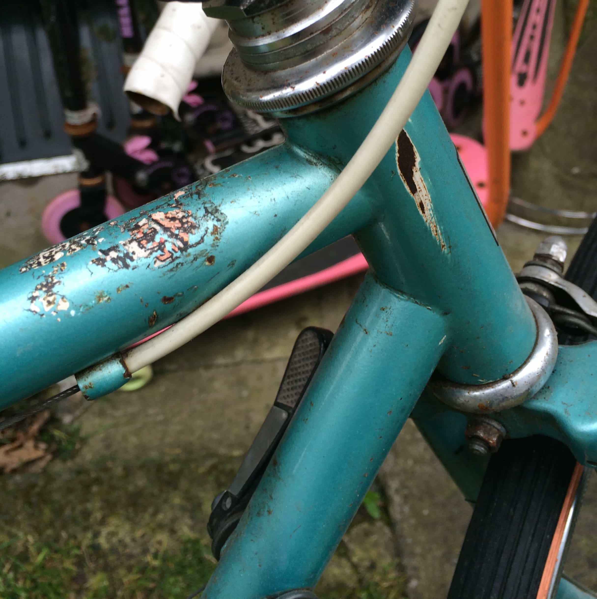
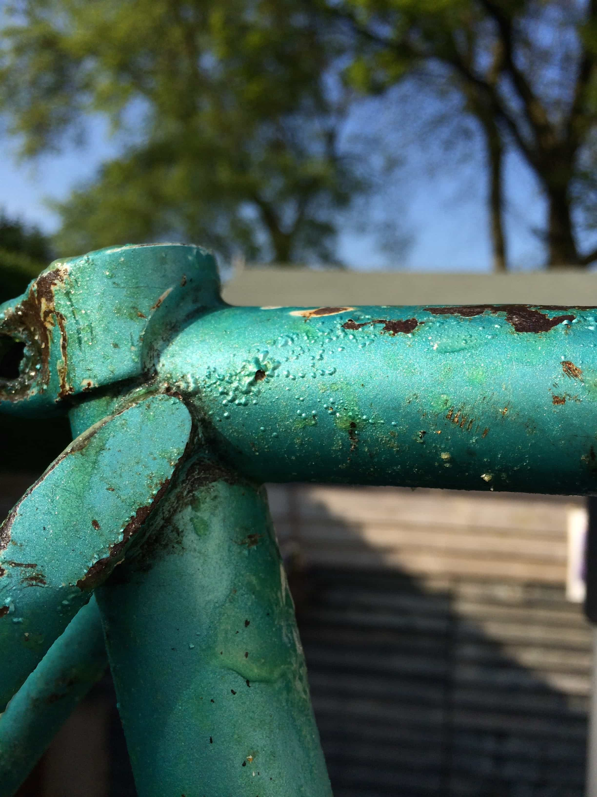
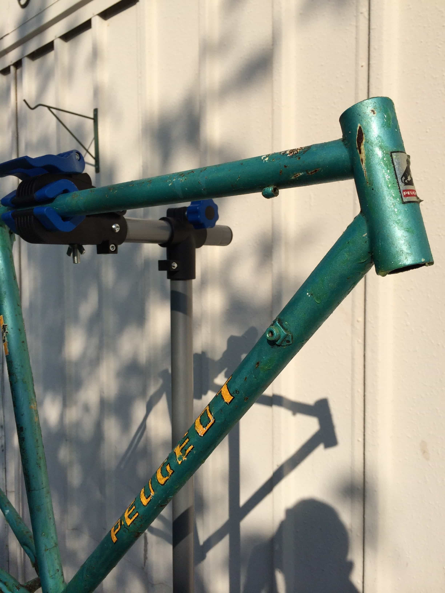
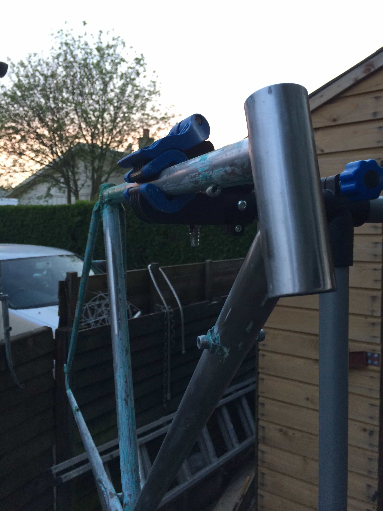

Evolution of the Belfast to Paris Bike
Dec 7, 2017
 Bought this from a middle aged guy in East Belfast - The furthest single journey the bike had travelled was the few miles each day he regularly rode from his parents house to Queens University Belfast and home again, back in the 1970's.
Funnily enough, I had never cycled more than a few miles at a time before this Belfast to Paris trip....we're well matched!
Okay, I'm not going to lie - this was hard work. A lot of manual labour, for hours at a time, over 3 days back to back.
The step in stripping everything back to the bare metal frame is getting a solution/product to help weaken and remove the paint from the frame of the bike. We went with one named Nitromorse. It was basically a green goop that you spread on the frame of the bike and leave for a number of hours so it can work it's magic..
 After a few bubbles under the paint and many hours passing, I used some abrasive metal brushes to strip 60% of the paintwork.
I then opted for with a sandpaper-esqe drill bit attached to a hand-held drill to help my weary hands strip the remaining stubborn chunks of paint. To finish, I used a range of sandpaper from 100-1400 grit (lower number = higher friction). Started with 100/200 to remove bigger chunks of paint, gradually going higher (1200+) to achieve a smooth finish on the bare stainless steel frame.

Progess was slow and difficult. It required a ton patience and perserverance - so the photo below is the last I took before finishing removing the remaining paint and beginning to prep for fresh paint. Also, time was of the essence...I had booked my Ferry from Rosslare > Cherbourg and my flights for a few months out from the bike refit - I was now commited to the BFS-PAR cycle.
back